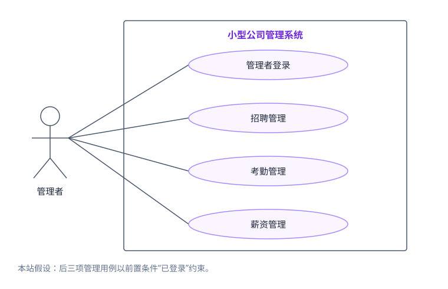
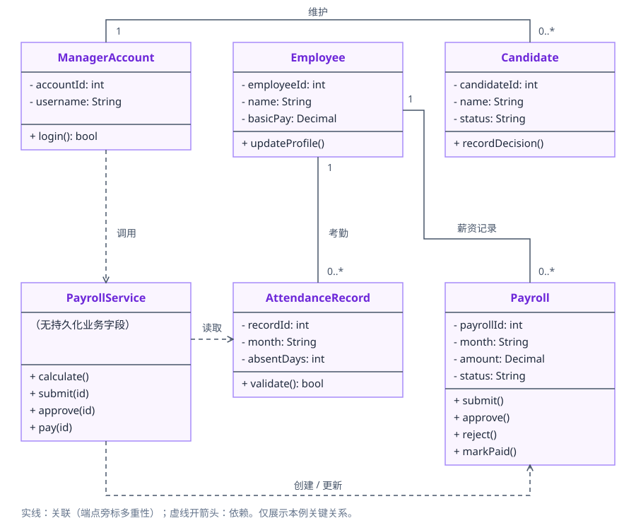
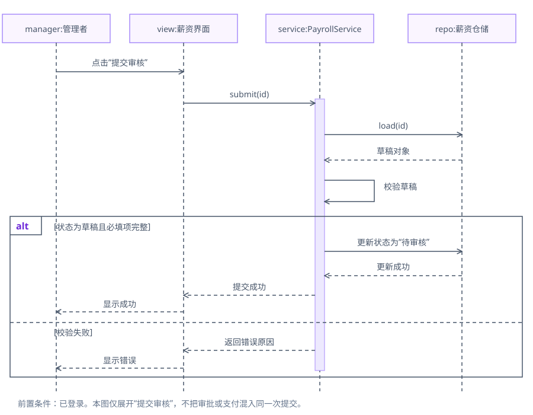
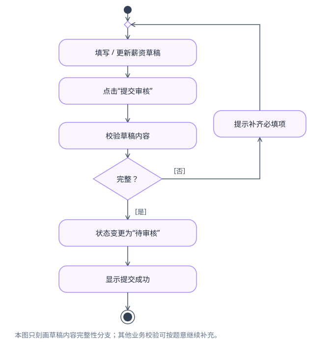
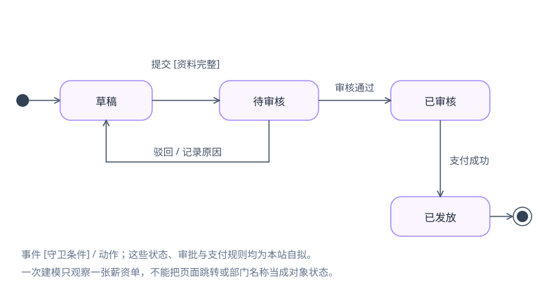

从原题四项功能出发，用同一个薪资管理场景贯通五种 UML 图。
本站自编非官方答案附 SVG 源图使用说明：这是分析与设计练习，不要求把公司系统完整编程实现。原文功能与本站业务假设分开标注，五张参考图不代表固定考试题量或官方评分答案。
原文：小型公司管理系统包括管理者登录、招聘管理、考勤管理、薪资管理，要求使用面向对象方法和 UML 分析设计。参见大纲第 4 页 ↗。
本站补充：用一名“管理者”代表操作者；登录是后三项管理用例的前置条件。招聘管理仅记录应聘者资料与决定；考勤按员工、月份记录；薪资按员工、月份形成薪资单。工资公式、权限细分与支付接口不在原文中，本例不自行指定计算公式。
为了练习动态建模，另设薪资单“草稿 → 待审核 → 已审核 → 已发放”，支持审核驳回到草稿。审批和支付均由同一管理者角色演示，这是简化的学习模型；实际项目可以拆角色，考试则服从题给约束。
本页用五种图覆盖大纲相关知识。原文没有规定样例必须提交五张图；下方 SVG 是本站绘制的矢量参考图，可以编辑其源文件，但不能把它们当成 StarUML 的原生模型工程。
先确定“谁使用系统、为了什么目标”。用例图不画数据库、按钮或内部函数调用。这里将已登录写成前置条件，避免为了出现 include 就把每项业务都强行包含“登录”。

四个原文功能对应四个用例；图中的参与者与登录前提为本站建模选择 · 下载可编辑 SVG。窄屏可在图内横向滑动。
前置条件：管理者已登录，员工和月份已选定，薪资单处于草稿状态。触发：点击提交审核。
后置条件：成功时状态待审核；失败时无状态变化。这里不把审核通过或发放成功写成“提交审核”的必然结果。
用类承载业务数据和操作，端点多重性用于解释“一个员工可有多少条记录”。下图仅选取关键关系，省略界面、仓储及其他技术类；顺序图出现的 repo 是后续设计补充的持久化协作者。

Employee 与 AttendanceRecord / Payroll 分别是一对多；PayrollService 通过依赖读取或更新对象 · 下载可编辑 SVG。窄屏可在图内横向滑动。
读法：每条考勤记录、薪资记录关联 1 名员工；每名员工可有 0..* 条记录。管理者账户维护 0..* 位应聘者是本例的简化关联。虚线开箭头是依赖，不是继承；不要为了凑关系无依据地画组合或泛化。
数据约束（自拟）：一名员工同一月份最多一张薪资单，由额外唯一性约束说明；这类约束不能仅靠 0..* 多重性表达。金额采用 Decimal 表意，不指定某一种编程语言的类型库。
同一用例按时间向下展开：操作者 → 界面 → 服务 → 仓储。服务先加载再校验，alt 两条分支互斥；读取已有草稿不意味着新建 Employee 或 Payroll。

实线为调用、虚线为返回；alt 展示成功与校验失败，状态变化与用例后置条件一致 · 下载可编辑 SVG。窄屏可在图内横向滑动。
活动图观察流程如何流动。缺项时回到填写，补齐后再提交；回流先经合并节点进入填写，不用并行汇合代替条件合并。本图只细化“完整性”校验，其余状态校验见用例说明。

菱形表示条件分支或合并，边上的 [是] / [否] 表示互斥条件 · 下载可编辑 SVG。窄屏可在图内横向滑动。
状态图只观察一张 Payroll。转换写成“事件 [条件] / 动作”，不得把“登录页面”“员工列表”当成薪资单状态。本例把已发放视为流程终点，撤销、退款等场景未建模。

提交并不等于审核通过；审核驳回回到草稿，支付成功才进入已发放 · 下载可编辑 SVG。窄屏可在图内横向滑动。
操作参考 StarUML 官方图管理说明 ↗、用例图工具说明 ↗和工程保存说明 ↗。官方在线文档可能面向较新版本，不据此改写大纲中的 4.0 要求。
SVG 已在浏览器检查显示；本站尚未在 StarUML 4.0 中复建原生工程，不将 SVG 下载标注成可导入的 .mdj 文件。